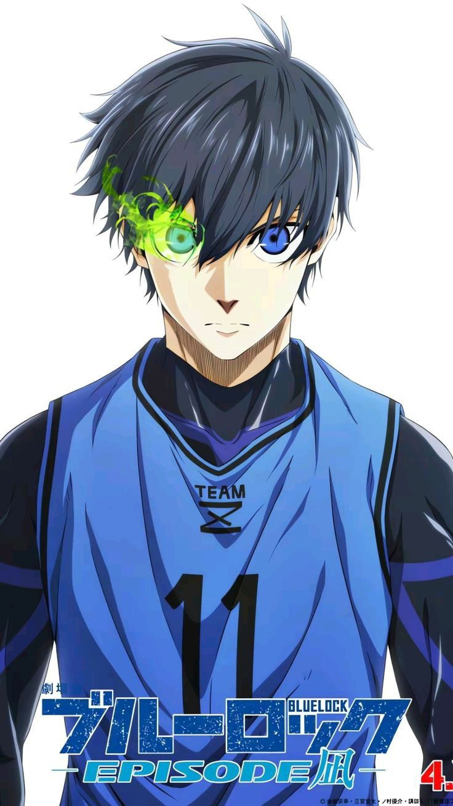
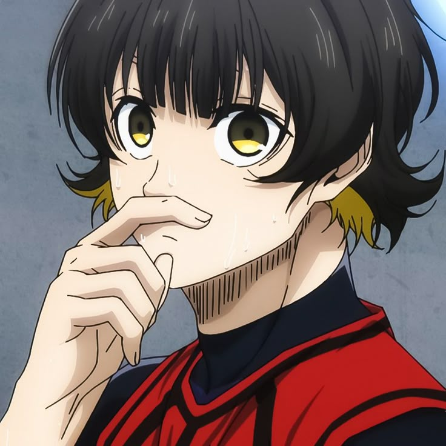
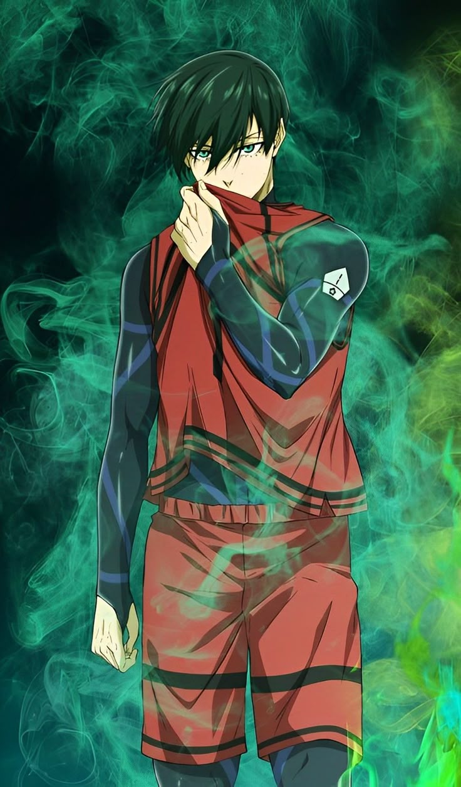

Yoichi Isagi
Protagonista de la serie. Es estratégico y tiene una gran capacidad de adaptación en el campo.
Meguru Bachira
Un jugador creativo con un estilo único e instintivo. Se deja llevar por su "monstruo interior".
Rin Itoshi
Un delantero extremadamente talentoso y frío, considerado uno de los más fuertes.
